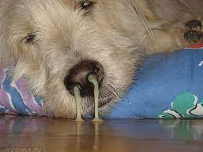

Các loại bệnh thường mắc phải ở Chó và Mèo:
Đối với Chó.
Nuôi chó bấy lâu nhưng bạn đã biết một số bệnh thường gặp ở chó hay chưa? Đừng nên chủ quan xem đó chỉ là những triệu chứng thông thường, không chữa trị, thì bé chó nhà bạn sẽ bị ảnh hưởng lớn đến sức khỏe đấy.
Hãy Cùng PETBAE tìm hiểu thêm về nguyên nhân của một số bệnh thường gặp ở chó và cách điều trị nhé!
1. Bệnh Ho Cũi ở chó:

Nguyên Nhân
Bệnh ho cũi chó được biết đến là bệnh do loại virus cúm canine parainfluenza kết hợp với các loại vi khuẩn có trong đường hô hấp khác như: Bordetella bronchiseptica, mycoplasma,...
Triệu Chứng
Để biết được chó bạn có nhiễm bệnh hay không thì hãy quan sát nếu chúng có những triệu chứng như: Ho khạc kéo dài từ 7-21 ngày. Mắt không trong sáng, có nhiều ghèn, gương mũi luôn khô ráp, chảy dịch xanh hay chó thường xuyên liếm mũi rồi nuốt dịch,... tiêu chảy, phân nát có máu, hôi tanh, nôn ra dịch nhớt vàng, thậm chí là gây tử vong đột ngột.
Cách Điều Trị
Một vài cách điều trị tại nhà có thể áp dụng:
- Cách ly chó bị bệnh khỏi chó khỏe mạnh.
- Vệ sinh môi trường xung quanh và nơi ở của chó sạch sẽ, giữ cho nơi ở khô ráo, ấm, kín gió.
- Truyền dịch cho chó.
- Dùng hơi nước làm dịu khoang họng cho chó.
Cách Phòng Ngừa
Hạn chế đưa chó tới nơi có nhiều động vật hoặc những nơi chật hẹp, bên cạnh đó bạn cũng không nên để thú cưng ăn uống bừa bãi ở nơi công cộng, việc tiêm vắc xin cũng là một biện pháp phòng ngừa bệnh ho cũi chó hiệu quả.
Lưu Ý: nhớ tham khảo ý kiến của bác sĩ thú y để biết nên tiêm vắc xin nào phù hợp nhé.
2. Bệnh viêm dạ dày ở chó
Nguyên Nhân
Do giun móc, virus parvo, virus gây bệnh care hoặc ăn phải thức ăn và nước uống có chứa vi khuẩn thương hàn (Salmonella), vi khuẩn yếm khí (Clostridium), vi khuẩn E.Coli,...
Nguyên Nhân
Chó mắc bệnh sẽ sốt, bỏ ăn, đôi lúc kèm theo những cơn run rẩy, nôn mửa liên tục, tiêu chảy nặng, chuyển qua thời kỳ cuối thì phân có màu nâu sẫm, rất tanh, thời kỳ này chó không đi được, chỉ có nằm một chỗ. Chăm sóc không chu đáo, kịp thời thì chó có thể chết từ 2-4 ngày sau khi nhiễm bệnh.
Cách Điều Trị
Nếu phát hiện chó nhiễm bệnh thì nên cho chó ngừng ăn trong 24 giờ đầu, chỉ cần cho chó uống đủ nước. Nếu như chó bị nôn thì có thể sử dụng anticholinergic và chlopromazin hoặc metoclopramid để chó được thoải mái hơn.
Việc truyền dịch để bù nước, chất điện giải đã mất cũng sẽ giúp chó được ổn hơn. Còn nếu chó đau bụng nhiều thì có thể sử dụng thuốc giảm đau perimidine, chó bị tiêu chảy thì có thể kết hợp điều trị giữa kaolin và pectin hoặc bismuth subcarbonate,...
Cách Phòng Ngừa
Cho chó ăn thức ăn chín, không nên để nó ăn thịt sống, thường xuyên tẩy giun sán định kỳ cho chó 3-4 tháng/ lần và tiêm vắc xin phòng bệnh Carê, Parvovirus.
Đối với Mèo.
Con người thường hay bị những bệnh vặt như ho, cảm, sốt,... do sự biến đổi thời tiết. Thì các bé mèo cũng dễ gặp vấn đề sức khỏe nếu không được chăm sóc kỹ lưỡng. Để phòng tránh những điều không mong muốn này, PETBAE đã thu thập được các bệnh thường gặp cần ghi nhớ khi nuôi mèo. Mọi người cùng tham khảo nhé!
Bệnh sán Mèo:
Có rất nhiều cách để giun sán xâm nhập vào cơ thể của mèo như: bị lây trứng giun từ sữa mẹ, mèo lớn hơn nhiễm giun móc qua da, và sán dây thông qua bọ chét, thỏ và các loài gặm nhấm đã bị nhiễm sán.

Vì nó nằm trong cơ thể, chúng ta khó thấy được nên có một số dấu hiệu của mèo bạn cần quan tâm như: đi ngoài có giun sán; mệt mỏi, yếu ớt, thường xuyên bỏ ăn; ăn uống đầy đủ, ăn nhiều nhưng không lên ký; suy nhược cơ thể trong thời gian dài.
Chúng ta nên đưa boss đi tẩy giun định kỳ. Và tùy vào độ tuổi của mèo chúng ta sẽ có sự điều chỉnh sao cho phù hợp.